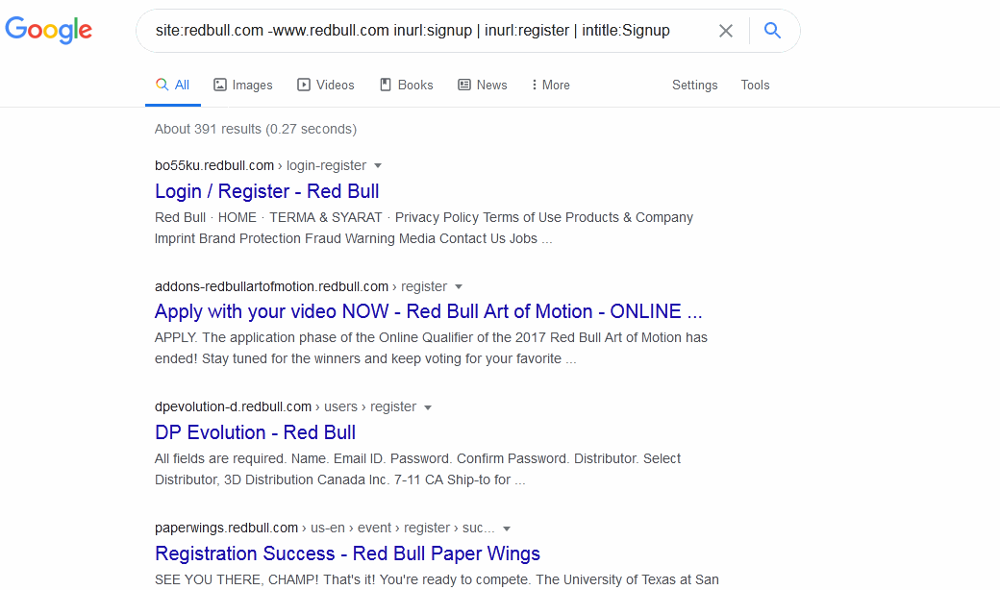
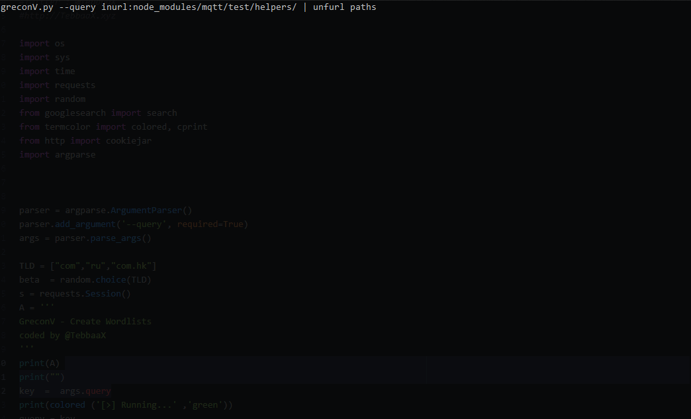
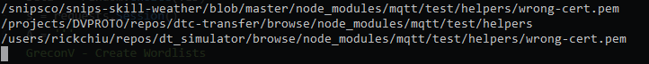

TebbaaX
simple blog about cybersecurity
Weaponizing Google Part 2 :
This Part Will be More in "Depth" where going to see few Examples on how to :
- Target a web based scope
- Target a personnel data
- Make our own WordLists
> Web Based Scopes :
Using RedBull.com as our PlayGround Were going to Create a Combination of Google Dorks in order to find / gather more
data on our scope.
to get the Subdomains and Sub-SubDomains were going easly to use
< site:*.*.> See Part 1 or better to use < site:target.com -www.target.com >
adding on that < site:" target.com " inurl:signup | inurl:register | intitle:Signup > so we can get the subdomains and sub-subdomains with the Login Signup pages
the result is pretty awsome the search query shows Redbull subdomains / sub-subdomains with the available login pages :

Now you got the Jump Start all you gotta do is working on your own combinations and develop them! 😎
> Targeting People and Data :
Digital Traces can be tracked using Google in so many wayes here's some google querys
That can reveal (in some cases 😏 ) some critical info about the target
So in this kind of "Recon" you must Target a specific type (extensions) of files e.g : pdf...xlsx...docx...
im also not Targeting a specific person in the example

in the example above i targeted the Named "adnane" revealing also some pdf files that mentioned the name some cases can reveal some Email Addreses / Medical Logs / Linked Banks / Social Accounts and some many other Things
as tips to sum-up :
- don't forget to change google search settings ( search can include French,English,German...😉)
- Play with extensions filetype:pdf/xlsx/doc/docx
- Target sites site:linkedin-twitter-university website...others
- Be Extremely Creative!
> Now Let's Cook some Wordlists 🔥 :
This is inspiered from @Tomnomnom's WWWWW about how to make Wordlists for Directory Brute Forcing and content Discovery while doing a Web based Recon
the bad part in this method is that we are going "fully blind" there's no website to target only loads of Dirs that can be used on a Web Based kind of scope
The Function Explained :

That was the theoric idea of creating wordlists to make it real i coded this small script that can be combined with @Tomnomnom's
Tool named unfurl it consist on pulling URL bits or Paths (to be specific) giving you a Large List of common paths that
can be used to brutrforce a directory 😃
Here i used both unfurl and GreconV conbined with this Dork to create a simple Wordlist
according GHDB brief documentation this Dork is targeting Exposed Private Keys 😶
- GreconV.py --query inurl:node_modules/mqtt/test/helpers/ | unfurl paths -

and We got Paths! These can added to your common Paths WordLists

- So this is it! all is up to you now to be creative and get to know more Dork Techniques and how to effectivly use them during your recon!
> Links :
unfurl
WWWWW
@Tomnomnom on Twitter
GHDB
GreconV -python script
Level up! you Dorking Skills on THM Google Dorking Room
@TebbaaX 02. Jan 2021 - 13h:37min